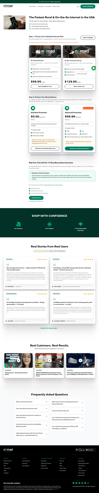

Every finding
All 10 findings, ranked. Export as CSV or JSON for your tracker.

1. Lab LCP of 46.4 s on mobile
Lighthouse (mobile emulation, single synthetic run via DataForSEO): Largest Contentful Paint 46.4 s against a ‘good’ threshold of
2. Competing primary CTAs
7 distinct calls to action compete on the same page: “CHECK COVERAGE”, “CHECK IF IT WORKS AT MY ADDRESS”, “SEE MY OPTIONS”, “GET S

3. Headline omits unlimited promise
The page's main headline reads “Reliable Internet That Works Anywhere in the U.S”.

4. Lab CLS of 0.73 on mobile
Lighthouse (mobile emulation, single synthetic run via DataForSEO): Cumulative Layout Shift 0.73 against a ‘good’ threshold of 0.1
5. Lab TBT of 1,140 ms on mobile
Lighthouse (mobile emulation, single synthetic run via DataForSEO): Total Blocking Time 1,140 ms against a ‘good’ threshold of 200
6. Review count and recency missing
A section heading reads “Real Stories from Real Users”.

7. Dead-end pricing page error
The /pricing page returns an error, causing a dead end for users seeking pricing information.
8. Funnel restarts on every page
The page's main headline reads “What Best Describes Your Time on the Road?”.
9. Multiple forms with identical submit
Two forms with the same CONTINUE label create ambiguity about the current step.
10. Value claims lack specifics
A section heading reads “The Fastest Rural & On-the-Go Internet in the USA”.